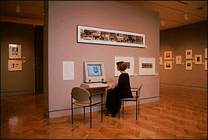

Interactive Media Programs Interactive computer programs and audio stations located throughout the museum allow visitors to explore the art, music, literature and current events of specific cultures and time periods. The Minneapolis Institute of Arts is developing over a dozen interactive programs to enhance your overall museum experience and encourage you to examine more closely the works of art installed in the galleries. Each program is unique and allows you to explore, according to your own interests, such areas as the culture, history, techniques, and artists behind our most important works of art. Interactive Touch Screen Programs
"A Prairie School Gem: The Virtual Tour of the
Purcell-Cutts House" About the Interactive Media Group The production of these programs was funded through a generous grant from the General Mills Foundation. For more information on The Minneapolis Institute of Arts Interactive Media programs contact the Interactive Media Group (612) 870-3211, Email: miagen@artsMIA.org . |